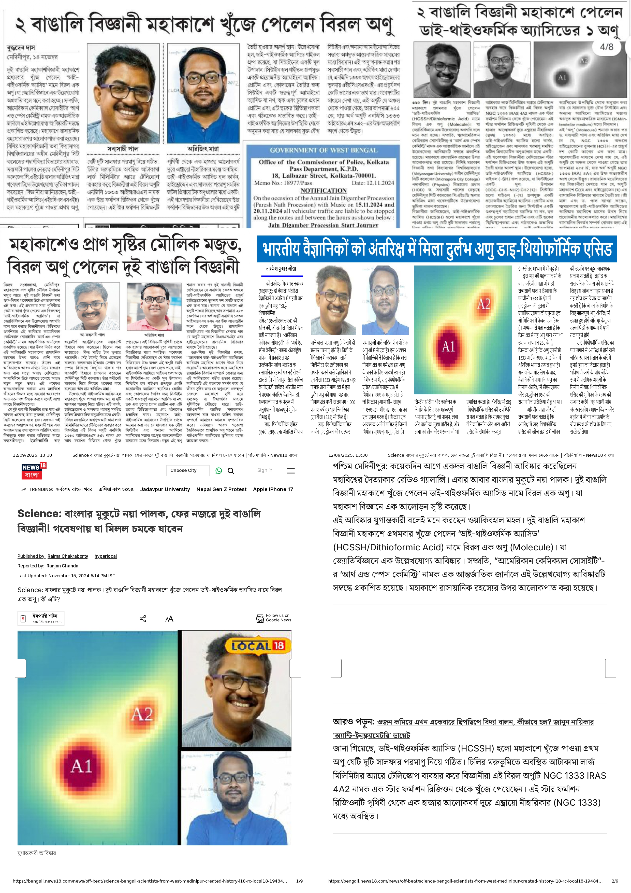
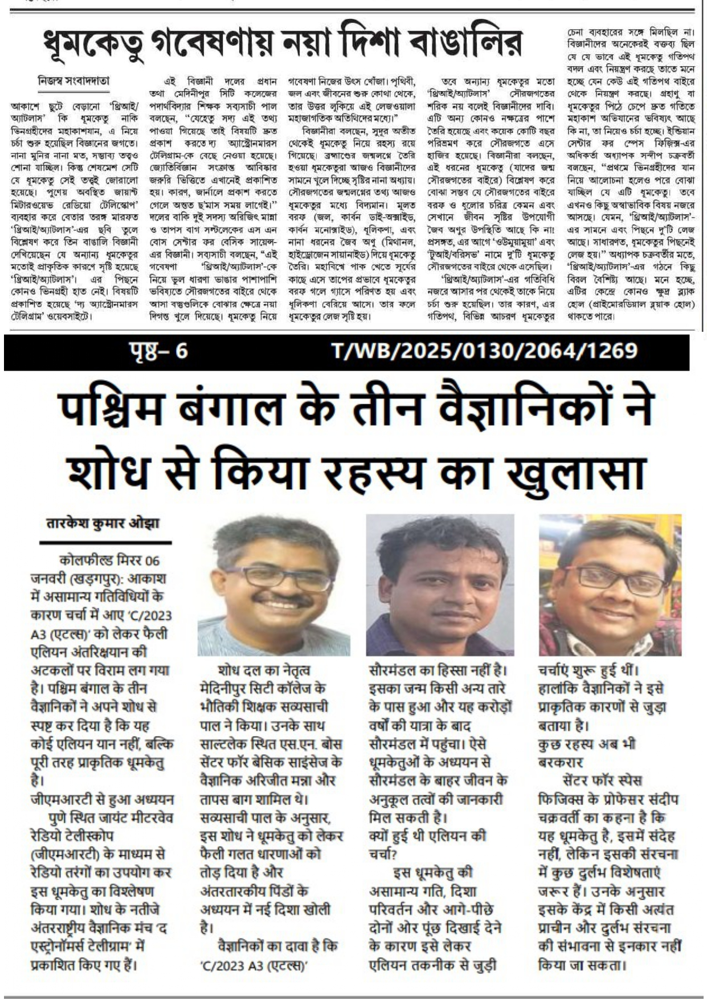
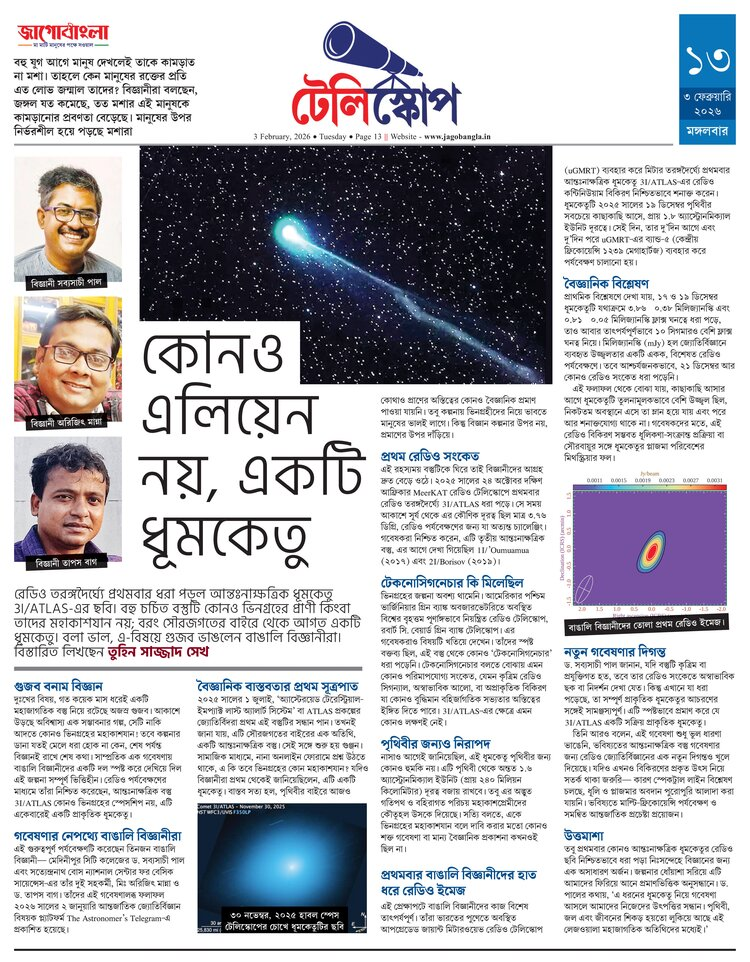

Latest News

Press coverage in NEWS 18 Bangla, Sangbad Pratidin, and Ajkal Patrika for the discovery of dithioformic acid (HC(S)SH) in hot corino object NGC 1333 IRAS 4A2.


Featured in Anandabazar Patrika, Coalfield Mirror, and Jago Bangla for our discovery of low-frequency radio emission from Comet 3I/ATLAS using the GMRT.